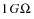

|
|
|||||||||
|
|
|
|
|
|
|
|
|
|
|
To simulate your design, PSpice needs to know about:
This information is provided in various data files. Some of these are generated by the design entry program such as Capture or Design Entry HDL, others come from libraries (which can also be generated by other programs like the Stimulus Editor and the Model Editor), and still others are user-defined.
When you begin the simulation process, the design entry programs first generate files describing the parts and connections in your circuit. These files are the netlist file and the circuit file that PSpice reads before doing anything else.
The netlist file contains a list of device names, values, and how they are connected with other devices. The name that design entry program generate for this file is DESIGN_NAME-DESIGN_NAME.NET. The netlist file is located in the directory:
<project_directory>\worklib\<design_name>\cfg_analog\
Before starting simulation, PSpice needs to read other files that contain simulation information for your circuit. These are model files, and if required, stimulus files and include files.
The simulation profile contains references to the other user-configurable files that PSpice needs to read.
You can create these files using PSpice programs like the Stimulus Editor and the Model Editor. These programs automate file generation and provide graphical ways to verify the data. You can also use the Model Text view in the Model Editor (or another text editor like Notepad) to enter the data manually.
PSpice uses this information in a model library to determine how a part will respond to different electrical inputs. These definitions take the form of either a:

|
model parameter set, which defines the behavior of a part by fine-tuning the underlying model built into PSpice, or |
|
|
subcrcuit netlist, which describes the structure and function of the part by interconnecting other parts and primitives. |
The most commonly used models are available in the PSpice model libraries shipped with your programs. The model library names have a.LIB extension.
If needed, however, you can create your own models and libraries, either by:
You can create a stimulus file either by:
|
|
manually using the text editor in PSpice (or a standard text editor) to create the definition (a typical file extension is .STM) |
An include file is a user-defined file that contains:
You can create an include file using any standard text editor. Typically, include file names have a .INC extension.
|
|

|
An include file can contain definitions, using the PSpice .FUNC command, for functions that you want to use in numeric expressions elsewhere in your design. |
PSpice searches model libraries, stimulus files, and include files for any information it needs to complete the definition of a part or to run a simulation.
The files that PSpice searches depend on how you configure your model libraries and other files. Much of the configuration is set up for you automatically, however, you can do the following yourself:
|
|
Change the scope of a file: that is, whether the file applies to a profile only, a design only (local) or to any design (global). |
To configure these, edit the simulation profile by using the Configuration Files tab in the Simulation Settings dialog box.
After reading the circuit file, netlist file, model libraries, and any other required inputs, PSpice starts the simulation. As simulation progresses, PSpice saves results to two files--the data file and the PSpice output file.
The data file contains simulation results that can be displayed graphically. PSpice reads this file automatically and displays waveforms reflecting circuit response at nets, pins, and parts that you marked in your design (cross-probing). You can set up your simulation so PSpice displays the results as the simulation progresses or after the simulation completes.
After PSpice has read the data file and displays the initial set of results, you can add more waveforms to perform post-simulation analysis of the data.
There are two ways to add waveforms to the display:
The PSpice output file is an ASCII text file that contains:
|
|
the simulation control parts (like VPRINT1 and VPLOT1) that you place and connect to nets in your design. |
This section describes what you need to do to set up your circuit for simulation.
|
|
Go to the referenced section. For those sections that provide overviews, you will find references to more detailed discussions. |
Note: You must create a new project (not a design) and select the Analog or Mixed-Signal Circuit Wizard option in order to be able to simulate the new design with PSpice.
Typical simulation setup steps
|
For more information on this step... |
||
|
Set component values and other properties. |
An overview of vendor, passive, breakout, and behavioral parts. |
|
|
Things to consider when specifying values for part properties |
||
|
Using global parameters and expressions for values |
How to define values using variable parameters, functional calls, and mathematical expressions. |
|
|
Define power supplies. |
An overview of DC power for analog circuits and digital power for mixed-signal circuits. |
|
|
Define input waveforms. |
An overview of DC, AC, and time-based stimulus parts. |
|
|
Set up one or more analyses. |
Procedures, general to all analysis types, to set up and start the simulation. Detailed information about DC, AC, transient, parametric, temperature, Monte Carlo, sensitivity/worst-case, and digital analyses. |
|
|
Place markers. |
How to display results in PSpice by picking nets in your design. |
|
|
Limiting data file size |
Advanced design entry and simulation setup steps
|
For more information on this step... |
||
|
Create new models. |
Define models using the Model Editor or Create Subcircuit command. |
|
|
Analog behavioral modeling |
Define the behavior of a block of analog circuitry as a mathematical function or lookup table. |
|
|
Digital device modeling |
Define the functional, timing, and I/O characteristics of a digital part. |
|
|
Create new parts. |
Create parts either automatically for models using the Parts utility, or by manually defining AKO parts; define simulation-specific properties. |
|
|
Create and edit part graphics, pins, and properties in general. |
If you have problems starting the simulation, there may be problems with the design or with system resources. If there are problems with the design, PSpice displays errors and warnings in the Simulation Status window. You can use the Simulation Status window to get more information quickly about the specific problem.
To get online information about an error or warning shown in the Simulation Status window
|
|
Press F1. |
The following tables list the most commonly encountered problems and where to find out more about what to do.
Things to check in your design
|
The model libraries, stimulus files, and include files are configured. |
|
|
The parts you are using have models. |
Unmodeled parts and Defining part properties needed for simulation |
|
You are not using unmodeled pins. |
|
|
You have defined the grounds. |
|
|
Every analog net has a DC path to ground. |
|
|
The part template is correct. |
|
|
Hierarchical parts, if used, are properly defined. |
|
|
Ports that connect to the same net have the same name. |
Things to check in your system configuration
|
The directory containing your design has write permission. |
|
|
Your system has sufficient free memory and disk space. |
The part libraries for PSpice supply numerous parts designed for simulation. The PSpice libraries are located in the PSpice sub-folder in the tools\capture\library directory under your main installation directory. They include:
At minimum, a part that you can simulate has these properties:
Note: Not all parts in the libraries are set up for simulation. For example, connectors are parts destined for board layout only and do not have these simulation properties. The libraries contained in the PSpice subfolder are the only ones set up for simulation.
Note: You must use the `0' (zero) ground part in designs intended to be simulated by PSpice. If you have used other ground parts, you can rename them to `0' so that they will be accepted by PSpice.
The PSpice part libraries also include special parts that you can use for simulation only. These include:
|
|
output control parts to do things like generate tables and line-printer plots to the PSpice output file |
The PSpice libraries provide an extensive selection of manufacturers' analog and digital parts. Typically, the library name reflects the kind of parts contained in the library and the vendor that provided the models. For example, MOTOR_RF.OLB and MOTOR_RF.LIB contain parts and models, respectively, for Motorola-made RF bipolar transistors.
Two types of libraries are provided with PSpice:
The standard PSpice libraries feature over 16,000 analog and 1,600 digital and mixed-signal models of devices manufactured in North America, Japan, and Europe.
Use parts from standard PSpice libraries or PSpice Advanced Analysis libraries if you want to analyze the part with PSpice.
The standard PSpice libraries are installed in the following locations in the installation directory:
\tools\capture\library\pspice
\tools\psice\library\
The parts in the standard PSpice libraries are listed in the online PSpice Library List. For information on finding parts using the online PSpice Library List, see Finding the part that you want. To find out more about each model library, read the comments in the .LIB file header.
The PSpice Advanced Analysis libraries contain over 4,300 analog parts. The Advanced Analysis libraries contain parameterized and standard parts. The majority of the parts are parameterized. The parametrized parts have tolerance, distribution, optimizable and smoke parameters that are required by the PSpice Advanced Analysis tools. Standard parts in the Advanced Analysis libraries are similar to parts in the standard PSpice libraries.
The parametrized parts are associated with template-based PSpice models. An important advantage of using the template-based PSpice models is that you can pass simulation parameters as properties from the schematic editor. For example, if a template-based model is associated with a part, the simulation parameters that you specify on an instance of the part in your design will be passed to the model. There is no need to edit the model itself to change a parameter value. This is unlike the standard PSpice parts that are associated with device characteristic curve-based PSpice models, where you need to edit the model to change a simulation parameter. For more information on template-based and device characteristic curve-based PSpice models, see Chapter 4, "Creating and editing models", in the online PSpice User's Guide.
Use parametrized parts from Advanced Analysis libraries if you want to analyze the part with an Advanced Analysis tool.
|
This Advanced Analysis tool... |
|
|
Tolerance parameters, Distribution parameters (default parameter value is Flat / Uniform) |
Note: You may use a mixture of standard and parameterized parts in your design, but Advanced Analysis is performed on only the parameterized components.
The Advanced Analysis libraries are installed in the following locations in the installation directory:
\tools\Capture\Library\PSpice\AdvAnls\
\tools\PSpice\Library
The parts in the Advanced Analysis libraries are listed in the online PSpice Advanced Analysis Library List. For information on finding parts using the online PSpice Advanced Analysis Library List, see Finding the part that you want. To find out more about each model library, read the comments in the .LIB file header.
The part names in the PSpice libraries usually reflect the manufacturers' part names. If multiple vendors supply the same part, each part name includes a suffix that indicates the vendor that supplied the model.
If you are having trouble finding a part, you can search the libraries for parts with similar names by using either:
|
|
the parts browser in Capture and restricting the parts list to those names that match a specified wildcard text string, or |
|
|
the online PSpice Library List or the PSpice Advanced Analysis Library List and searching for the generic part name using capabilities of the Adobe Acrobat Reader. |
|
|
In the Part Name text box, type a text string with wildcard characters that approximates the part name that you want to find. Use this syntax: |
<wildcard><part_name_fragment><wildcard>
where <wildcard> is one of the following:
The parts browser displays only the matching part names.
|
|
|
This method finds any part contained in the current part libraries configuration, including parts for user-defined models. |
If you want to find out more about a part supplied in the PSpice libraries, such as manufacturer or whether you can simulate it, then search the online library lists.
Separate library lists are provided for standard PSpice libraries and Advanced Analysis libraries. The parts in the standard PSpice libraries are listed in the online PSpice Library List. The parts in the Advanced Analysis libraries are listed in the online PSpice Advanced Analysis Library List.
|
|

|
From the Windows Start menu, choose the OrCAD release programs folder and then the Cadence Help shortcut. |
The Cadence Help window appears.
|
|
Press F2 or choose View - Navigation - Show to open the list of documents in the hierarchy if it is not already shown. |
This opens the library list. Click the PDF Viewer icon on the Cadence Help toolbar if required.
|
|
|
If you are unsure of the device type, you can scan all of the device type lists using the Acrobat search capability. The first time you do this, you need to set up the across-list index. To find out more, refer to the online Adobe Acrobat manuals. |
The PSpice libraries supply several basic parts based on the passive device models built into PSpice. These are summarized in the following table.
To find out more about how to use these parts and define their properties, look up the corresponding PSpice device letter in the Analog Devices chapter in the online PSpice Reference Manual, and then see the Capture Parts sections.
|
These parts are available... |
Which is this PSpice device letter... |
|
|
XFRM_LINEAR K_LINEAR |
||
|
For these device types, the PSpice libraries supply several parts. Refer to the online PSpice Reference Manual for the available parts. |
The PSpice libraries supply passive and semiconductor parts with default model definitions that define a basic set of model parameters. This way, you can easily:
|
|
assign device and lot tolerances to model parameters for Monte Carlo and sensitivity/worst-case analyses, |
These are called breakout parts and are summarized in the following table.
To find out more about how to use these parts and define their properties, look up the corresponding PSpice device letter in the Analog Devices chapter in the online PSpice Reference Manual, and then see the Capture Parts sections.
|
Use this breakout part... |
Which is this PSpice device letter... |
|
|
XFRM_NONLINEAR |
||
* For this device type, the PSpice libraries supply several breakout parts. Refer to the online PSpice Reference Manual for the available parts.
Behavioral parts allow you to define how a block of circuitry should work without having to define each discrete component.
These parts use analog behavioral modeling (ABM) to define each part's behavior as a mathematical expression or lookup table. The PSpice libraries provide ABM parts that operate as math functions, limiters, Chebyshev filters, integrators, differentiators, and others that you can customize for specific expressions and lookup tables. You can also create your own ABM parts.
These parts use special behavioral primitives to define each part's functional and timing behavior. These primitives are:
Many of the digital parts provided in the PSpice libraries are modeled using these primitives. You can also create your own digital behavioral parts using these primitives.
If you want to use a part for simulation, then your part should have the PSPICETEMPLATE property defined for it:
You can also add other simulation-specific properties for digital parts: IO_LEVEL, MNTYMXDLY, and PSPICEDEFAULTNET.
Here are the things to check when editing part properties:
For examples of how to use the PSPICETEMPLATE property, see PSPICETEMPLATE examples.
To edit a property needed for simulation
|
|
Click in the cell of the column you want to change (for example, PSPICETEMPLATE), or click the New button to add a property (and type the property name in the Name text box). |
The PSPICETEMPLATE property defines the PSpice syntax for the part's netlist entry. When creating a netlist, Capture substitutes actual values from the circuit into the appropriate places in the PSPICETEMPLATE syntax, then saves the translated statement to the netlist file.
Any part that you want to simulate must have a defined PSPICETEMPLATE property. These rules apply:
|
|
The number and order of the pins listed in the PSPICETEMPLATE property must match those for the associated .MODEL or .SUBCKT definition referenced for simulation. |
|
|
The first character in a PSPICETEMPLATE must be a PSpice device letter appropriate for the part (such as Q for a bipolar transistor). |
Regular characters include the following:
An identifier is a collection of regular characters of the form:
alphabetic character [any other regular character]*.
Property names are preceded by a special character as follows:
The schematic page editor processes the property according to the special character as shown in the following table.
|
Value of <id>. Error if no <id> property or if no value assigned. |
|
|
Text between the first s...s separators if <id> is defined, else the second s...s clause. |
|
|
Text between the first s...s separators if <id> is undefined, else the second s...s clause. |
|
|
Text between s...s separators if <id> is defined, but delete rest of template if <id> is undefined. |
Separator characters include commas (,), periods (.), semi-colons (;), forward slashes (/), and vertical bars (|). You must always use the same character to specify an opening-closing pair of separators.
The schematic page editor replaces the ^ character with the complete hierarchical path to the device being netlisted.
Caution--Recommended scheme for netlist templates
Templates for devices in the part library start with a PSpice device letter, followed by the hierarchical path, and then the reference designator (REFDES) property.
It is recommended that you adopt this scheme when defining your own netlist templates.
Example: R^@REFDES for a resistor
The part editor replaces the character sequence \n with a new line. Using \n, you can specify a multi-line netlist entry from a one-line template.
The % character and pin names in templates
Pin names are denoted as follows:
%<pin name>
where pin name is one or more regular characters.
The schematic page editor replaces the %<pin name> clause in the template with the name of the net connected to that pin.
The end of the pin name is marked with a separator. To avoid name conflicts in PSpice, the schematic page editor translates the following characters contained in pin names.
|
This pin name character... |
|
Note: To include a literal % character into the netlist output, type %% in the template.
|
|
two required properties: REFDES and VALUE |
where REFDES equals R23, VALUE equals 1k, and R is connected to nets abc and def.
|
|
two pins: + and - |
V^@REFDES %+ %- ?DC|DC=@DC| ?AC|AC=@AC|
where REFDES equals V6, VSRC is connected to nodes vp and vm, DC is set to 5v, and AC is undefined.
where, in addition to the settings for the previous translation, AC is set to 1v.
Suppose you have a subcircuit Z that has:
|
|
a subcircuit parameter: G, where G defaults to 1000 when no value is supplied |
To allow the parameter to be changed on the schematic page, treat G as an property in the template.
X^@REFDES %a %b Z PARAMS: ?G|G=@G|
Equivalent template (using the if...else form)
X^@REFDES %a %b Z PARAMS: ?G|G=@G||G=1000|
X_U33 101 102 Z PARAMS: G=1024
where REFDES equals U33, G is set to 1024, and the subcircuit connects to nets 101 and 102.
X_U33 101 102 Z PARAMS: G=1000
where the settings of the previous translation apply except that G is undefined.
For a digital stimulus device template (such as that for a DIGSTIM part), a pin name can be preceded by a * character. This signifies that the pin can be connected to a bus and the width of the pin is set to be equal to the width of the bus.
U^@REFDES STIM(%#PIN, 0) %*PIN
where #PIN refers to a variable width pin.
U_U1 STIM(4,0) 5PIN1 %PIN2 %PIN3 %PIN4
where the stimulus is connected to a four-input bus, a[0-3].
The number and sequence of pins named in a template for a subcircuit must agree with the definition of the subcircuit itself--that is, the node names listed in the .SUBCKT statement, which heads the definition of a subcircuit. These are the pinouts of the subcircuit.
The IO_LEVEL property defines what level of interface subcircuit model PSpice must use for a digital part that is connected to an analog part.
If you are creating a digital part, you need to
|
|
Add the IO_LEVEL property to the part and assign a value shown in the table below. |
|
|
Use this property in the PSPICETEMPLATE property definition (IO_LEVEL is also a subcircuit parameter used in calls for digital subcircuits). |
The MNTYMXDLY property defines the digital propagation delay level that PSpice must use for a digital part.
If you are creating a digital part, you need to do the following
|
|
Add the MNTYMXDLY property to the part and assign a value shown in the table below. |
|
|
Use this property in the PSPICETEMPLATE property definition (MNTYMXDLY is also a subcircuit parameter used in calls for digital subcircuits). |
The PSPICEDEFAULTNET pin property defines the net name to which a power or ground (invisible) pin is connected.
For example, if the power and ground pins on a digital part are connected to the digital nets $G_DPWR and $G_DGND respectively, then the properties are defined as follows:
If you are creating a digital part, you need to do the following
|
|
For each power pin, create a PSPICEDEFAULTNET property and assign the name of the digital net to which the pin is connected. |
|
|
Use the appropriate pin name in the PSPICETEMPLATE property definition. |
Note the following when specifying values for part properties:
|
|
Do not leave a space between the value and its unit, if the unit is a scale symbol. For example, specify 5K instead of 5 K. |
For a listing of the scale symbols, see Numeric value conventions in the Before you begin chapter of the online PSpice Reference Guide.
|
|
Do not use the European notation for specifying values. For example, if you specify 3K3 (the European notation for 3.3K), PSpice reads the value as 3K. Use 3.3K instead. |
|
|
Specify tolerance values as percentages. If you specify an absolute value, the tolerance value will be read as an absolute number. For example, if you specify the value of the POSTOL property as a percentage, say 10%, on a 10K resistor, the distribution values will be taken in the range of 10K?1K. If you specify the tolerance value as an absolute number, say 10, the distribution values will be taken in the range of 10K?10?. |
In addition to literal values, you can use global parameters and expressions to represent numeric values in your circuit design.
A global parameter is like a programming variable that represents a numeric value by name.
Once you have defined a parameter (declared its name and given it a value), you can use it to represent circuit values anywhere in the schematic; this applies to any hierarchical level.
Some ways that you can use parameters are as follows:
|
|
Set up an analysis that sweeps a variable through a range of values (for example, DC sweep or parametric analysis). |
When multiple parts are set to the same value, global parameters provide a convenient way to change all of their values for "what-if" analyses.
For example, if two independent sources have a value defined by the parameter VSUPPLY, then you can change both sources to 10 volts by assigning the value once to VSUPPLY.
To use a global parameter in your design, you need to:
|
|
define the parameter using a PARAM part from SPECIAL.OLB |
|
|
|
Click New, then enter NAMEn in the Property Name text box, then click OK. This creates a new property for the PARAM part, NAMEn in the spreadsheet. |
|
|
|
Click in the cell below the NAMEn column and enter a default value for the parameter. |
|
|
|
While this cell is still selected, click Display. In the Display format frame, select Name and Value, then click OK. |
|
|

|
System variables have reserved parameter names. Do not use these parameter names when defining your own parameters. |
|
|
|
Click Apply to update all the changes to the PARAM part, and then close the spreadsheet. |
For example, to declare the global parameter VSUPPLY that will set the value of an independent voltage source to 14 volts, place the PARAM part, and then create a new property named VSUPPLY with a value of 14v.
To use the global parameter in your circuit
|
|
Find the numeric value that you want to replace: a component value, model parameter value, or other property value. |
{ global_parameter_name }
The curly braces tell PSpice to evaluate the parameter and use its value.
An expression is a mathematical relationship that you can use to define a numeric or boolean (TRUE/FALSE) value.
PSpice evaluates the expression to a single value every time:
For example, a parameter that changes with each step of a DC sweep or parametric analysis.
To use an expression in your circuit
|
|
Find the numeric or boolean value you want to replace: a component value, model parameter value, other property value, or logic in an IF function test. |
{ expression }
where {expression} can contain any of the following:
The curly braces tell PSpice to evaluate the expression and use its value.
* Logical and relational operators are used within the IF() function; for digital parts, logical operators are used in Boolean expressions.
For lists of system variables and functions in arithmetic expression, refer to your PSpice User's Guide.
If the analog portion of your circuit requires DC power, then you need to include a DC source in your design. To specify a DC source, use one of the following parts.
|
For this source type... |
|
Every digital part supplied in the PSpice libraries has a default digital power supply defined for its A-to-D or D-to-A interface subcircuit. This means that if you are designing a mixed-signal circuit, then you have a default 5 volt digital power supply built-in to the circuit at every interface.
If needed, you can customize the power supply for different logic families.
|
For this logic family... |
|
To simulate your circuit, you need to connect one or more source parts that describe the input signal that the circuit must respond to.
The PSpice libraries supply several source parts that are described in the tables that follow. These parts depend on:
|
|
how you want to define the stimulus: using the Stimulus Editor, using a file specification, or by defining part property values. |
Analog stimuli include both voltage and current sources. The following table shows the part names for voltage sources.
|
If you want this kind of input... |
|
|
AC magnitude and phase |
|
|
piecewise-linear that repeats forever |
|
|
piecewise-linear that repeats n times |
|
|
frequency-modulated sine wave |
|
** VPWL_F_RE_FOREVER and VPWL_F_N_TIMES are file-based parts; the stimulus specification is saved in a file and adheres to PSpice netlist syntax.
To determine the part name for an equivalent current source
For example, the current source equivalent to VDC is IDC, to VAC is IAC, to VEXP is IEXP, and so on.
You can use VSTIM and ISTIM parts to define any kind of time-based input signal. To specify the input signal itself, you need to use the Stimulus Editor.
If you want to run more than one analysis type, including a transient analysis, then you need to use either of the following:
The time-based stimulus parts that you can use to define a transient, DC, and/or AC input signal are listed below.
In addition to the transient properties, each of these parts also has a DC and AC property. When you use one of these parts, you must define all of the transient properties. However, it is common to leave DC and/or AC undefined (blank). When you give them a value, the syntax you need to use is as follows.
For the meaning of transient source properties, refer to the I/V (independent current and voltage source) device type syntax in the Analog Devices chapter in the online PSpice Reference Guide.
The VSRC and ISRC parts have one property for each analysis type: DC, AC, and TRAN. You can set any or all of them using PSpice netlist syntax. When you give them a value, the syntax you need to use is as follows.
where time-based_type is EXP, PULSE, PWL, SFFM, or SIN, and the parameters depend on the time-based_type.
For the syntax and meaning of transient source specifications, refer to the I/V (independent current and voltage source) device type in the Analog Devices chapter in the online PSpice Reference Guide.
Note: If you are running only a transient analysis, it is recommended that you use a VSTIM or ISTIM part if you have the standard package, or one of the other time-based source parts that has properties specific for a waveform shape.
If you want this kind of input... Use this part....
|
For transient analyses |
|
|
signal or bus (any width) |
|
|
file-based signal or bus (any width) |
This section includes troubleshooting tips for some of the most common reasons your circuit design may not netlist or simulate.
Common reasons for simulation problems include:
Unconfigured model, stimulus, or include files
Note: You must use the `0' (zero) ground part in designs intended to be simulated by PSpice. If you have used other ground parts, you can rename them to `0' so that they will be accepted by PSpice.
If you see messages like this in the Capture Session Log:
Warning: Part part_name has no simulation model
then you may have done one of the following things:
|
|
|
Placed a part from the PSpice libraries that is not available for simulation (used only for board layout). |
Replace the part with an equivalent part from an analog library or digital library with modeled parts.
|
|
That it has Implementation type=PSpice Model and an Implementation property with a non-blank value. |
Note: The libraries listed in the tables that follow all contain parts that you can simulate. Some files also contain parts that you can only use for board layout. That's why you need to check the PSPICETEMPLATE property if you are unsure or still getting warnings when you try to simulate your circuit.
If so, load this part into the part editor and set these properties appropriately. One way to approach this is to edit the part that appears in your design.
The part editor window appears with the part already loaded.
If you see messages like these in the Capture Session Log,
(design_name) Floating pin: refdes pin pin_name
Floating pin: pin_id
File not found
Can't open stimulus file
or messages like these in the PSpice output file,
Model model_name used by device_name is undefined.
Subcircuit subckt_name used by device_name is undefined.
Can't find .STIMULUS "refdes" definition
then you may be missing a model library, stimulus file, or include file from the configuration list, or the configured file is not on the library path.
|
|
If the file is configured, does the default library search path include the directory path where the file resides, or explicitly define the directory path in the configuration list? |
If the file is not configured, add it to the list and make sure that it appears before any other library or file that has an identically-named definition.
|
|
In the Simulation Settings dialog box, click the Configuration Files tab and click Include, Library and Stimulus in the Category field. |
If the directory path is not specified, update the default library search path or change the file entry in the configuration list to include the full path specification.
If you see messages like these in the Capture Session Log,
Warning: Part part_name pin pin_name is unmodeled.
Warning: Less than 2 connections at node node_name.
or messages like this in the PSpice output file,
Floating/unmodeled pin fixups
then you may have drawn a wire to an unmodeled pin.
The PSpice libraries include parts that are suitable for both simulation and board layout. These parts may have a mix of modeled pins and unmodeled pins. The unmodeled pins map into packages but have no electrical significance; PSpice ignores unmodeled pins during simulation.
If so, do one of the following:
|
|
If you expect the connection to affect simulation results, find an equivalent part that models the pins in question and draw the connections. |
If for every net in your circuit you see this message in the PSpice output file,
ERROR -- Node node_name is floating.
then your circuit may not be tied to ground.
If not, place and connect one (or more, as needed) in your design. You can use the 0 (zero) ground part in SOURCE.OLB or any other ground part as long as you change its name to 0.
Note: You must use the `0' (zero) ground part in designs intended to be simulated by PSpice. If you have used other ground parts, you can rename them to `0' so that they will be accepted by PSpice.
If for selected nets in your circuit you see this message in the PSpice output file,
ERROR -- Node node_name is floating.
then you may be missing a DC path to ground.
If so, then add a very large (for example, ) resistor either:
When preparing a circuit for simulation with PSpice, it's important to be sure that all pins for all parts are connected properly. If a pin is intentionally meant to remain unconnected, you need to use the PSpice pin property FLOAT, rather than a No Connect symbol. Otherwise, the circuit may not netlist correctly for PSpice.
The pin property FLOAT may have one of the following three values:
|
The pin will not netlist. An error message will be returned when the PSpice simulation netlist is generated. Use Error when you want to be reminded that this pin is a "no connect" and should be treated in a special way. Error is the default value. |
|
|
The pin is connected to a virtual resistor, whose opposite pin is tied to GND. The resistor has a value of 1/GMIN. This value allows the simulation netlist to be created and allows PSpice to perform the analysis. The virtual resistor will not be processed as part of a layout netlist or appear in a BOM. |
|
|
The pin, when left unconnected, is attached to a unique node when the PSpice simulation netlist is generated. Use UniqueNet when you want the pin to remain unconnected but correspond to the Probe data associated with its part. |
The FLOAT property can either be defined in the Part Editor when creating a new part, or you can edit a pin on an existing part using the Property Editor spreadsheet.
To define the FLOAT property using the Property Editor spreadsheet
|
|
Click in the cell under the FLOAT column for the pin, and then type the property value you want to use. |
** Contains mixed-signal parts.
To find out more about a particular library, refer to the online PSpice Library List or read the header of the model library file itself.